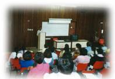

| Panorama d'événements |
|
|
L'Ile Maurice, petite île située à l'est de l'Afrique, est communément connue comme le Singapour de l'Océan Indien. C'est un endroit très spirituel avec une population constituée principalement d'hindous, de bouddhistes, de chrétiens et de musulmans. Ce pays est un grand exemple de tolérance religieuse et spirituelle avec toutes races, religions, croyances et personnes de sexes opposés vivant ensemble en paix et en harmonie.
Doté d'un tel fond culturel, il était facile au Centre de l'Ile Maurice d'organiser un séminaire à l'Université de l'île. Le président de l'Association des Etudiants aussi bien que les membres et amis de cette association ont accueilli avec enthousiasme l'idée du séminaire pour aider à élever l'humanité. Le public a saisi cette opportunité pour connaître les enseignements d'un vrai Maître vivant, appelé le Maître Suprême Ching Hai. L'équipe nous a aidés avec beaucoup de respect en s'occupant de la réservation de la salle de conférence, l'impression de nos affiches et aussi pour la publicité.
Des personnes de tous horizons ont assisté au séminaire, et ont montré un ardent désir de connaître la Vérité. Après le séminaire, le messager Guan Yin a demandé à l'audience qui était intéressé d'apprendre la Méthode Pratique, et quasiment tout le monde est resté. Beaucoup ont eu de grandes expériences intérieures. Une dame a affirmé avoir vu un rayon lumineux intensément brillant descendre comme une colombe pour la bénir. Elle était remplie d'une telle félicité et d'une telle joie qu'elle ressemblait à un enfant. Maintenant, elle, ainsi que beaucoup d'autres attendent impatiemment l'initiation.
Tout ce qui concernait la conférence était parfaitement arrangé par Dieu. Même les interviews organisées par la chaîne locale de télévision et les journaux se sont bien passées. Puissions-nous Vous remercier, chère Maître, de nous donner l'opportunité de nous aider nous-même spirituellement en aidant les autres.
|  | Séminaire à l'Université de l'Ile Maurice pour partager les enseignements de Maître. |
|
|